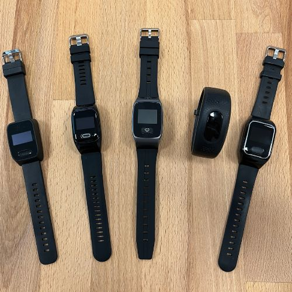

Bestes Ergebnis in allen 5 Testkategorien.
Klarer Testsieger 2026.
Die LUADA 2 überzeugte in unserem Test als einziges Gerät in allen fünf Kategorien ohne nennenswerte Schwächen. Besonders die Kombination aus präziser Sturzerkennung, langer Akkulaufzeit und einfacher Bedienung hebt sie vom Wettbewerb ab.
Zur LUADA 2 beim Hersteller →Schnellvergleich: Alle 5 Modelle auf einen Blick
| Kriterium | 🥇 LUADA 2 | James Pro | Patronus GPS+ | Gardia One | Bembu Active |
|---|---|---|---|---|---|
| Gesamtnote | 9,2 / 10 | 7,8 / 10 | 7,4 / 10 | 6,2 / 10 | 6,0 / 10 |
| Sturzerkennung | ✓ Ja, einstellbar | ✓ Ja | ✓ Ja | ✗ Nein | ⚠ Ja, fehleranfällig |
| GPS / Mobilfunk | ✓ GPS + WLAN + 4G | ✓ GPS + 4G | ✓ GPS + 4G | ✗ Nur DECT | ✓ GPS + 4G |
| Akkulaufzeit | Bis zu 5 Tage* | Bis zu 2 Tage* | Bis zu 3 Tage* | Bis zu 4 Tage* | Bis zu 3 Tage* |
| Wasserdicht | IP67 | IP67 | IP44 | IP44 | IP67 |
| Telefonieren | ✓ Freisprechen | ✓ Freisprechen | ✓ Freisprechen | ✗ Nein | ✓ Freisprechen |
| Einmalpreis | ab 199,95 € | ca. 189 € | ca. 219 € | ca. 129 € | ca. 289 € |
| Laufende Kosten | SIM optional ~5–15 €/Monat | SIM ~5–10 €/Monat | Abo ab 14,95 €/Monat | Keine (DECT) | Integriert ~6 €/Monat |
* Akkulaufzeiten laut Herstellerangaben. Reale Laufzeit je nach Nutzungsintensität, Mobilfunkempfang und aktivierten Funktionen.
Die Testberichte im Detail
Sturzerkennung: Die LUADA 2 verfügt über eine einstellbare Sturzerkennung in drei Empfindlichkeitsstufen. Im Test erkannte sie simulierte Stürze zuverlässig und löste nach der konfigurierbaren Wartezeit automatisch Alarm aus. Die Falschalarmrate bei alltäglichen Bewegungen (Hinhocken, Handgesten) war auf mittlerer Stufe akzeptabel gering.
GPS & Ortung: Die Kombination aus GPS, WLAN-Positionierung und Mobilfunk (4G) ermöglicht sowohl Indoor- als auch Outdoor-Ortung. Im Außenbereich war die GPS-Verbindung in unserem Test innerhalb von 60–90 Sekunden verfügbar. In Innenräumen lieferte die WLAN-Positionierung eine brauchbare Näherungslokalisierung.
Akku: Die Laufzeit erreichte im Alltagstest bei moderater GPS-Abfragehäufigkeit ca. 4 bis 5 Tage – konform mit der Herstellerangabe. Die Ladestation ist magnetisch und einfach zu bedienen, auch für Senioren.
Bedienung: Der große, seitlich angebrachte SOS-Knopf ist der Hauptbedienpunkt. Kein Touchscreen, keine Menünavigation notwendig. Die einmalige Einrichtung über die App dauerte im Test etwa 15–20 Minuten.
Vorteile
- Einstellbare, zuverlässige Sturzerkennung
- GPS + WLAN + 4G Mobilfunk
- Bis zu 5 Tage Akku (Herstellerangabe)
- IP67 – auch beim Duschen tragbar
- Zwei-Wege-Kommunikation
- Bis zu 5 Notfallkontakte
- Leicht und diskret
Nachteile
- SIM-Karte separat erforderlich
- Einrichtung via App (einmalig)
- Kein Herzrhythmus-Monitoring
Produktbilder – LUADA 2 (Testsieger)
LUADA2_front.jpg800 × 800 px · weißer Hintergrund
Schwarzes/weißes Gehäuse, SOS-Knopf sichtbar
LUADA2_wrist_lifestyle.jpg800 × 600 px · warm, natürlich
Person trägt Uhr, aktiv (Spaziergang/Garten)
LUADA2_button.jpg800 × 600 px
Seitlicher SOS-Knopf, deutlich sichtbar
LUADA2_charger.jpg800 × 600 px
Uhr in magnetischer Ladeschale
LUADA2_display.jpg800 × 600 px
Uhrzeit, Akkuanzeige, Signalstärke
LUADA2_box.jpg800 × 600 px
Verpackung + Uhr + Ladeschale + Anleitung
320 × 320 px
Produktfoto freigestellt
Die James Wearable Pro liefert solide Grundfunktionen und überzeugt in Sturzerkennung und GPS-Ortung. Der kritische Schwachpunkt ist die Akkulaufzeit von rund 48 Stunden bei normaler Nutzung – was bedeutet: tägliches Laden ist Pflicht. Wer das einmal vergisst, trägt eine eingeschränkt schutzfähige Uhr.
Verarbeitung und Tragekomfort sind gut. Die Einrichtung ist einfacher als bei der Patronus, aber der kurze Akku bleibt das Hauptargument gegen dieses Gerät für den Seniorenalltag.
Vorteile
- Gute Sturzerkennung
- GPS + 4G Mobilfunk
- IP67 wasserdicht
- Leichte Bedienung
Nachteile
- Nur ~48 h Akku (Hauptschwäche)
- Tägliches Laden erforderlich
- Keine WLAN-Positionierung indoor
Produktbilder – James Wearable Pro
James_front.jpg800 × 600 px · weißer Hintergrund
Zifferblatt, SOS-Knopf sichtbar
James_wrist.jpg800 × 600 px · Lifestyle
Getragen, natürliches Licht
James_back.jpg800 × 600 px · weißer Hintergrund
Sensor, Ladestifte sichtbar
James_charger.jpg800 × 600 px · neutral
Uhr in Ladeschale

Die Patronus GPS Plus bietet eine der besten GPS-Ortungen im Test und optional eine professionelle 24h-Notrufzentrale – das unterscheidet sie klar von reinen Peer-to-Peer-Systemen. Der Abo-Preis für die Zentrale (ab 14,95 €/Monat) erhöht jedoch die laufenden Kosten.
Die größte Schwäche: Die Einrichtung ist komplex. In unserem Test benötigten Tester ohne technische Vorkenntnisse über 60 Minuten für die vollständige Konfiguration. Für viele Senioren ohne technisch affine Angehörige ist das eine reale Hürde.
Vorteile
- Sehr gute GPS-Performance
- 24h-Notrufzentrale optional
- Sturzerkennung vorhanden
Nachteile
- Komplexe Einrichtung
- Höhere laufende Kosten (Abo)
- Nur IP44 Wasserschutz
Produktbilder – Patronus GPS Plus
Patronus_front.jpg800 × 600 px · weißer Hintergrund
Display, Gehäuse, Knopf
Patronus_wrist.jpg800 × 600 px · Lifestyle
Getragen, natürliches Licht
Patronus_back.jpg800 × 600 px
Ladestifte, Sensor-Bereich
Patronus_box.jpg800 × 600 px
Verpackung + Zubehör

Die Gardia One ist die günstigste Option im Test und die einfachste zu bedienen. Für Personen, die ausschließlich zu Hause Schutz benötigen und keine Sturzerkennungsfunktion brauchen, kann sie eine sinnvolle, kostengünstige Lösung sein.
Ihr fundamentales Limit: DECT-Technologie ohne Mobilfunk bedeutet kein Schutz außerhalb der Wohnung. Wer auch nur auf die Terrasse oder in den Garten geht, ist nicht abgesichert. Sturzerkennung fehlt komplett.
Vorteile
- Günstigster Einmalpreis
- Sehr einfache Bedienung
- Keine laufenden Kosten
Nachteile
- Kein GPS / kein Mobilfunk
- Nur innerhalb der Wohnung
- Keine Sturzerkennung
- Kein Telefonieren
Produktbilder – Gardia One Notrufarmband
Gardia_top.jpg800 × 600 px
Breites Band, Knopf oben mittig
Gardia_wrist.jpg800 × 600 px
Getragen, zeigt Armband-Format
Gardia_base.jpg800 × 600 px
DECT-Basisstation, Stecker
Gardia_box.jpg800 × 600 px
Armband + Basisstation + Zubehör

Die Bembu Active bietet interessante Zusatzfunktionen wie Schrittzähler und Herzfrequenzmessung, was sie für aktive Senioren attraktiv erscheinen lässt. Im Kernbereich – der Sturzerkennung – zeigt sie jedoch die schwächste Leistung des Tests.
In unserem Test produzierte die Bembu Active bei normalen Alltagsbewegungen (Hinhocken, Stiefelzuschnüren, lebhaftes Gestikulieren) regelmäßig Fehlalarme. Das führte in der Praxis dazu, dass Testpersonen die Sturzerkennung deaktivierten – womit der wichtigste Schutzaspekt wegfällt. Der hohe Einmalpreis verstärkt das Missverhältnis.
Vorteile
- Herzfrequenz-Messung
- Schrittzähler / Fitness-Tracking
- GPS + 4G Mobilfunk
- IP67 wasserdicht
Nachteile
- Sturzerkennung fehleranfällig
- Teuerster Preis im Test
- Zu viele Fehlalarme in der Praxis
Produktbilder – Bembu Active
Bembu_front.jpg800 × 600 px · weißer Hintergrund
Farb-Display, größeres Gehäuse
Bembu_back.jpg800 × 600 px
HF-Sensor-Öffnungen deutlich sichtbar
Bembu_wrist.jpg800 × 600 px · Lifestyle
Zeigt Größenverhältnis am Arm
Bembu_box.jpg800 × 600 px
Verpackung + SIM-Karte inklusive
Kaufberatung: Worauf sollte man bei einer Notrufuhr achten?
Die Auswahl einer Notrufuhr kann überwältigend wirken. Viele Geräte sehen ähnlich aus, unterscheiden sich aber in den entscheidenden Details erheblich. Diese Kaufberatung hilft Ihnen, die richtigen Fragen zu stellen – bevor Sie eine Entscheidung treffen.
1. Hausnotruf oder mobile Notrufuhr? – Der grundlegende Unterschied
Das ist die erste Entscheidung, die Sie treffen müssen. Sie hängt davon ab, wo die Person, die geschützt werden soll, die meiste Zeit verbringt.
Hausnotruf (DECT)
Basisstation + Knopf. Schützt innerhalb eines festen Radius (ca. 30–50 m). Keine SIM-Karte, keine laufenden Kosten. Keine GPS-Ortung. Für: Personen, die fast ausschließlich zu Hause sind.
Mobile Notrufuhr
SIM-Karte + GPS. Schützt überall mit Mobilfunknetz. GPS-Ortung für Angehörige. Telefonieren möglich. SIM kostet ca. 5–15 €/Monat. Für: Aktive Senioren, die auch draußen unterwegs sind.
Mit Sturzerkennung
Erkennt Stürze automatisch, ohne dass der Knopf gedrückt werden muss. Unerlässlich, wenn die Person nach einem Sturz möglicherweise nicht mehr reagieren kann. Empfehlung: Immer wählen, wenn möglich.
Mit Notrufzentrale
24h-professionelle Leitstelle, die den Notruf entgegennimmt. Sinnvoll, wenn keine Angehörigen erreichbar sind. Monatliche Zusatzkosten ab ca. 15 €. Für: Alleinlebende ohne erreichbare Angehörige.
2. Sturzerkennung: Was steckt dahinter?
Die automatische Sturzerkennung ist technisch komplexer als sie klingt. Das Gerät nutzt einen Beschleunigungssensor und ein Gyroskop, um die typische Bewegungssequenz eines Sturzes zu erkennen:
- Erkennung der Lageänderung: Der Sensor registriert eine plötzliche, ungewöhnlich schnelle Bewegungsänderung.
- Erkennung des Aufpralls: Ein charakteristischer Schlag-Impuls wird detektiert.
- Beobachtungsphase: Das Gerät prüft, ob sich die Person danach noch bewegt. Stürze, nach denen man sofort wieder aufsteht, werden nicht als Notfall gewertet.
- Alarm: Bei Bewegungslosigkeit über eine konfigurierbare Zeitspanne wird ein akustischer Hinweis gegeben. Reagiert die Person nicht, erfolgt der Notruf.
Die Herausforderung: Zu empfindlich eingestellt, gibt es zu viele Fehlalarme (beim Hinhocken, Bücken, lebhafter Bewegung). Zu unempfindlich, werden echte Stürze nicht erkannt. Gute Notrufuhren bieten daher mehrere einstellbare Empfindlichkeitsstufen.
Die Sturzerkennung ist eine technische Hilfsfunktion – kein Ersatz für medizinische Überwachung. Sie kann je nach Sturzart, Trageposition und Einstellung nicht jeden Sturz erkennen und kann in bestimmten Situationen Fehlalarme produzieren. Eine regelmäßige Überprüfung der Einstellungen ist empfehlenswert.
3. Die Kostenfrage: Was kostet eine Notrufuhr wirklich?
Viele Käufer achten nur auf den Einmalpreis – dabei sind die laufenden Kosten oft entscheidender. Hier eine Übersicht:
| Kostenart | Hausnotruf | Mobile Notrufuhr (SIM selbst) | Mobile Notrufuhr + Notrufzentrale |
|---|---|---|---|
| Einmalig | ca. 100–200 € | ca. 150–300 € | ca. 150–300 € |
| Monatlich | 0 € (keine SIM) | ca. 5–15 € (SIM) | ca. 15–25 € (SIM + Zentrale) |
| Jährlich gesamt | ca. 0 € laufend | ca. 60–180 € | ca. 180–300 € |
| Pflegekasse möglich? | Ja, § 40 SGB XI (bis 50 %) | Auf Anfrage (keine Garantie) | Auf Anfrage (keine Garantie) |
4. Akkulaufzeit im Alltag – was die Zahlen bedeuten
Hersteller geben „bis zu X Tage" als Akkulaufzeit an – unter Laborbedingungen und optimaler Nutzung. In der Praxis hängt die tatsächliche Laufzeit stark von folgenden Faktoren ab:
- Häufigkeit der GPS-Abfragen (jede Stunde kostet deutlich mehr als einmal täglich)
- Mobilfunknetzqualität (schlechter Empfang = mehr Energie für Verbindungsaufbau)
- Anzahl der Telefonminuten über die Uhr
- Aktivierung von Herzfrequenz- oder Schrittzähler-Monitoring
Als Faustregel: Kalkulieren Sie mit 60–70 % der angegebenen Herstellerlaufzeit als realistischen Alltags-Wert. Ein Gerät mit „bis zu 5 Tagen" schafft in der Praxis zuverlässig 3–4 Tage.
5. Für wen ist welches Gerät sinnvoll?
Aktive Senioren, viel unterwegs
Empfehlung: Mobile Notrufuhr mit GPS + Sturzerkennung (z. B. LUADA 2). Schützt auch außerhalb der eigenen vier Wände.
Senioren, überwiegend zu Hause
Hausnotruf als günstige Basisoption. Wenn Sturzrisiko hoch: zusätzlich oder alternativ mobile Uhr mit Sturzerkennung.
Angehörige weit entfernt
GPS-Ortung wichtig. Mobile Notrufuhr mit App-Benachrichtigung. Evtl. Notrufzentrale, wenn niemand schnell erreichbar.
Demenz / eingeschränkte Kognition
Geo-Zaun-Funktion sinnvoll (Alarm bei Verlassen definierter Zone). Einfachste Bedienung, ggf. kein Knopf (nur Sturzerkennung).
Brauche ich eine 24h-Notrufzentrale? – Der große Unterschied
Viele Notrufuhren alarmieren bei einem Notfall direkt die hinterlegten privaten Kontakte – Familie, Freunde, Nachbarn. Das ist für viele Situationen ausreichend. Für andere ist eine professionelle 24h-Notrufzentrale die bessere Wahl.
Peer-to-Peer-System (privater Notruf)
Beim Peer-to-Peer-System werden im Notfall die gespeicherten Privatpersonen angerufen. Das ist kostengünstiger und persönlicher – aber es gibt eine kritische Schwäche: Was passiert, wenn niemand abnimmt? Wenn alle Kontakte gerade nicht erreichbar sind (nachts, im Urlaub, bei der Arbeit), besteht eine echte Lücke im Schutzsystem.
Professionelle 24h-Notrufzentrale
Einige Anbieter ermöglichen gegen einen monatlichen Aufpreis (ca. 15–25 €/Monat) die Anbindung an eine professionelle Leitstelle. Diese ist rund um die Uhr, 365 Tage im Jahr besetzt. Wird ein Notruf ausgelöst und niemand aus dem privaten Kontaktkreis antwortet, übernimmt die Zentrale – bis hin zur Verständigung des Rettungsdienstes.
Wann ist eine Notrufzentrale sinnvoll?
- Alleinlebende ohne erreichbare Angehörige in der Nähe
- Personen, deren Angehörige arbeitsbedingt tagsüber nicht ans Telefon gehen können
- Wenn der Schutz auch nachts vollständig gewährleistet sein muss
- Bei erhöhtem gesundheitlichen Risiko (Herzerkrankung, schwere Osteoporose, frühere Stürze)
Für alle anderen – aktive Senioren mit einem guten familiären Netzwerk – reicht das Peer-to-Peer-System meist vollständig aus.
Die SIM-Karte: Was man wissen muss
Alle mobilen Notrufuhren in unserem Test benötigen eine SIM-Karte, um zu funktionieren. Dabei gibt es drei Modelle:
1. Eigene SIM-Karte
Sie besorgen selbst eine Nano-SIM-Karte von einem beliebigen Anbieter (Telekom, Vodafone, O2, Aldi Talk, Congstar etc.) und setzen sie in die Uhr ein. Das ist die flexibelste und oft günstigste Option. Ein einfacher Datentarif mit Telefonie für ca. 5–10 €/Monat reicht vollständig aus.
Vorteil: Volle Kontrolle über Anbieter und Kosten. Nachteil: Einmalige Einrichtung erforderlich.
2. Integrierte SIM-Karte (beim Anbieter)
Einige Hersteller liefern die Uhr mit einer bereits integrierten oder mitgelieferten SIM und berechnen monatlich pauschal (z. B. 6–15 €/Monat). Das ist einfacher, aber teurer. Prüfen Sie, ob das Angebot monatlich kündbar ist.
3. Sorglos-Paket
Manche Hersteller bieten ein Rundum-Paket an: SIM, Einrichtung, App und Notrufzentrale in einem Preis. Praktisch, aber oft das Teuerste. Gut für Angehörige, die keine Zeit für Konfiguration haben.
Achten Sie darauf, dass der gewählte Tarif Telefonie (Anrufe) und keine Datenflat ausschließlich enthält. Viele günstige Datentarife erlauben keine regulären Sprachgespräche. Für Notrufuhren reicht ein einfacher Prepaid-Tarif mit Sprachtelefonie ab ca. 5 €/Monat (z. B. Aldi Talk, Congstar Basic).
Notrufuhr bei Demenz: Besondere Anforderungen
Für Senioren mit Demenz oder anderen kognitiven Einschränkungen gelten besondere Anforderungen an eine Notrufuhr. Die wichtigsten Punkte:
Warum Demenz die Auswahl verändert
Personen mit Demenz können häufig nicht mehr aktiv einen Knopf drücken oder eine Situation als Notfall einordnen. Gleichzeitig neigen sie dazu, Geräte abzulegen oder sich Hilfestellungen zu widersetzen. Das macht die automatische Sturzerkennung noch wichtiger – sie funktioniert auch ohne aktives Zutun der betroffenen Person.
Geo-Zaun / Sicherheitszone
Eine besonders wertvolle Funktion bei Demenz ist der sogenannte Geo-Zaun (auch Sicherheitszone genannt). Dabei wird ein digitaler Perimeter um die Wohnung, das Haus oder den Garten definiert. Verlässt die Person diesen Bereich, erhalten Angehörige sofort eine Benachrichtigung auf ihr Smartphone – auch wenn kein Notruf ausgelöst wurde.
Das gibt Angehörigen die Möglichkeit, frühzeitig zu reagieren, wenn jemand mit Demenz desorientiert das Haus verlässt – bevor eine gefährliche Situation entsteht. Nicht alle Notrufuhren bieten diese Funktion. Achten Sie beim Kauf explizit darauf.
Was bei Demenz besonders wichtig ist
- Automatische Sturzerkennung (kein aktives Drücken erforderlich)
- Geo-Zaun-Funktion mit App-Benachrichtigung
- GPS-Ortung jederzeit abrufbar (nicht nur im Notfall)
- Wasserdicht (wird oft vergessen anzulegen, wenn sie nicht dauerhaft getragen werden kann)
- Einfache Bedienung – idealerweise ein einziger Knopf
Pflegekasse und Krankenversicherung: Was wird bezahlt?
Die Kostenfrage ist für viele Familien entscheidend. Hier ein vollständiger Überblick über die Erstattungsmöglichkeiten in Deutschland:
Stationärer Hausnotruf – § 40 SGB XI (Pflegekasse)
Personen mit einem anerkannten Pflegegrad (Pflegegrad 1–5) können einen stationären Hausnotruf als Pflegehilfsmittel nach § 40 SGB XI bei ihrer Pflegekasse beantragen. Die Pflegekasse übernimmt dabei bis zu 50 % der Kosten, maximal jedoch 25,50 Euro pro Monat. Das gilt jedoch ausdrücklich nur für fest installierte Systeme mit Basisstation (DECT-Hausnotruf), nicht automatisch für mobile GPS-Uhren.
Mobile Notrufuhr – keine standardisierte Erstattung
Für mobile Notrufuhren mit GPS und Mobilfunk gibt es bislang keine einheitliche Erstattungsgrundlage in der gesetzlichen Pflegekasse. Einige Pflegekassen erstatten dennoch auf Anfrage – als individuelles „technisches Hilfsmittel zur selbstständigen Lebensführung". Es lohnt sich, formlos bei der eigenen Pflegekasse anzufragen.
Schritt-für-Schritt: Antrag stellen
- Pflegegrad feststellen lassen (falls noch nicht vorhanden): Antrag beim MDK stellen
- Hausnotruf-Anbieter auswählen (bei stationären Systemen)
- Formlose Anfrage oder Antrag bei der Pflegekasse stellen
- Ärztliche Verordnung / Empfehlung einholen (stärkt den Antrag)
- Genehmigung abwarten und Gerät bestellen
Auch ohne Pflegegrad kann sich eine mobile Notrufuhr steuerlich absetzen lassen – als außergewöhnliche Belastung nach § 33 EStG, wenn eine nachgewiesene gesundheitliche Notwendigkeit besteht. Sprechen Sie hierzu mit einem Steuerberater.
Netzgenerationen: 2G, 3G, 4G – Was bedeutet das für die Notrufuhr?
Die Mobilfunktechnologie der Uhr ist entscheidend für die Zuverlässigkeit. Hier ein kurzer Überblick:
2G (GSM)
Das älteste Netz, das in Deutschland noch aktiv ist (voraussichtlich bis ca. 2028–2030). Für Sprachtelefonie und SMS zuverlässig. GPS funktioniert über Datenverbindung. 2G-Geräte sind oft günstiger, aber langfristig ein Auslaufmodell.
3G (UMTS)
Achtung: 3G wurde in Deutschland 2021 abgeschaltet. In der Schweiz und Österreich ebenfalls. Notrufuhren, die ausschließlich 3G unterstützen, funktionieren in diesen Ländern nicht mehr. Beim Kauf unbedingt auf 4G achten.
4G (LTE) – empfohlen
Aktueller Standard. Breitere Netzabdeckung, bessere Verbindungsqualität, schnellerer GPS-Verbindungsaufbau. Alle Testsieger-Kandidaten in unserem Test unterstützen 4G. Für künftige Sicherheit empfehlen wir ausschließlich 4G-fähige Geräte.
Einrichtung Schritt für Schritt: So richtet man eine Notrufuhr ein
LUADA2_setup.jpg · 1200 × 675 px (16:9)Zeigt: Hand legt SIM-Karte ein, dann Smartphone mit App, dann Uhr leuchtet auf. Mehrteilig oder Collage.
Einrichtung in 3 Schritten: SIM einlegen, App verbinden, Kontakte eintragen. (Redaktionsbild)
Die Einrichtung einer modernen Notrufuhr ist einfacher als viele denken – und wird in der Regel von den Angehörigen einmalig übernommen. Danach muss der Senior selbst nichts mehr konfigurieren.
Schritt 1: SIM-Karte einlegen
SIM-Karte kaufen (Nano-SIM, im Supermarkt oder online), aktivieren und in den SIM-Schacht der Uhr einlegen. Bei Sorglos-Paketen entfällt dieser Schritt.
Schritt 2: App auf dem Smartphone installieren
Die Begleit-App des Herstellers auf dem Smartphone der Angehörigen installieren und ein Konto erstellen. Die meisten Apps sind kostenlos.
Schritt 3: Uhr mit der App verbinden
Uhr einschalten und über die App verbinden. In der Regel über einen QR-Code oder eine Geräte-ID, die auf der Uhr oder der Verpackung steht. Verbindung dauert ca. 2–5 Minuten.
Schritt 4: Notfallkontakte eingeben
In der App die Notfallkontakte hinterlegen (Name + Telefonnummer). Priorität festlegen: Wer wird zuerst angerufen? Bis zu 5 Kontakte bei den meisten Geräten möglich.
Schritt 5: Sturzerkennung konfigurieren
Empfindlichkeit der Sturzerkennung einstellen. Starten Sie mit „mittel" und beobachten Sie die ersten Wochen. Bei zu vielen Fehlalarmen auf „gering" reduzieren, bei zu wenig Sicherheit auf „hoch" erhöhen.
Schritt 6: Probealarm auslösen
Wichtig: Immer einen Testnotruf auslösen, bevor die Uhr regulär getragen wird. So stellen Sie sicher, dass alle Kontakte erreichbar sind, der GPS-Standort korrekt übermittelt wird und der Alarm auf der Uhr funktioniert.
Schritt 7: Einweisung des Seniors
Der Senior muss nur eines wissen: Im Notfall den SOS-Knopf drücken. Bei automatischer Sturzerkennung: nichts tun, alles läuft automatisch. Es empfiehlt sich, den Knopf einmal gemeinsam zu üben.
Praktische Tipps für den Alltag mit der Notrufuhr
Laden zur festen Zeit einplanen
Am besten täglich zur gleichen Zeit – z. B. immer beim Zähneputzen abends. So wird es zur Routine. Manche Uhren lassen sich über die App erinnern, wenn der Akkustand unter einen Schwellenwert fällt.
Die Uhr immer tragen – auch zu Hause
Die häufigste Ursache für versagende Notrufuhren im Ernstfall: die Uhr liegt auf dem Nachttisch, während der Senior in der Küche stürzt. Die Uhr schützt nur, wenn sie getragen wird. Helfen Sie dabei, die Uhr als normalen Alltagsgegenstand zu etablieren – wie eine Brille.
Regelmäßige Tests durchführen
Mindestens einmal im Monat einen Testnotruf auslösen. So stellen Angehörige sicher, dass das System noch funktioniert, die Kontakte aktuell sind und die SIM-Karte gültig ist.
Notfallkontakte aktuell halten
Wenn sich Telefonnummern von Angehörigen ändern, sofort in der App aktualisieren. Ein Notruf, der auf eine nicht mehr aktive Nummer geht, ist wirkungslos.
Die 7 häufigsten Fehler beim Kauf einer Notrufuhr
Eine günstige Uhr kann langfristig teurer sein als ein Premiummodell, wenn die Abo-Kosten hoch sind. Immer die Gesamtkosten über 2–3 Jahre berechnen.
Die Sturzerkennung ist die wichtigste Funktion – nicht das GPS, nicht die App. Ein Gerät ohne Sturzerkennung schützt nur, wenn die Person aktiv handeln kann.
Viele Nutzer tragen die Uhr wochenlang, ohne je überprüft zu haben, ob der Alarm tatsächlich ankommt. Ein System, das man nicht getestet hat, vertraut man im Ernstfall zu Unrecht.
3G ist in Deutschland seit 2021 abgeschaltet. Ältere Geräte, die nur 3G unterstützen, funktionieren nicht mehr. Immer auf 4G-Unterstützung achten.
„Ich brauche sie doch nur zu Hause." Stürze passieren überall – im Garten, auf dem Spaziergang, beim Einkaufen. Eine Notrufuhr, die zuhause auf dem Tisch liegt, wenn man draußen stürzt, hilft nicht.
Das Bad ist der Ort mit dem höchsten Sturzrisiko im Haus. Und viele Stürze passieren nachts. Eine Uhr, die beim Duschen oder im Bett abgelegt wird, schützt in zwei der risikoreichsten Situationen nicht.
Ein leerer Akku bedeutet: kein Schutz. Viele Uhren senden zwar eine SMS-Warnung bei niedrigem Akkustand – aber nur wenn die SIM-Karte funktioniert. Regelmäßiges Laden zur festen Uhrzeit ist die zuverlässigste Lösung.
Der Ratgeber für Angehörige: Die 10 wichtigsten Fragen
Oft sind es die Kinder, Geschwister oder Lebenspartner, die sich um die Sicherheit ihrer Eltern oder des Partners sorgen. Hier die Antworten auf die Fragen, die uns Angehörige am häufigsten stellen:
„Meine Mutter will keine Notrufuhr tragen – was soll ich tun?"
Das ist das häufigste Problem. Viele ältere Menschen lehnen Notrufuhren ab, weil sie sich damit „krank" oder „alt" fühlen. Ein paar Strategien helfen:
- Kein Pflegegerät-Framing: Präsentieren Sie die Uhr als modernes Sicherheitstool – wie ein Smoke-Detektor, nur für die Person selbst.
- Diskrete Modelle wählen: Moderne Notrufuhren wie die LUADA 2 sehen aus wie normale Sportuhren. Zeigen Sie Bilder.
- Angehörigen-Perspektive nutzen: „Ich mache mir Sorgen" funktioniert oft besser als Überzeugungsarbeit mit Fakten.
- 30-Tage-Test anbieten: „Trägt du sie nur mal einen Monat?" – die meisten Nutzer behalten sie danach.
„Wer richtet die Uhr ein? Muss ich dabei sein?"
Die Einrichtung übernehmen meist die Angehörigen – dauert ca. 15–30 Minuten. Viele Hersteller bieten einen kostenpflichtigen Einrichtungsservice an (Uhr wird fertig konfiguriert geliefert). Das ist besonders sinnvoll, wenn die Angehörigen weit entfernt wohnen.
„Kann ich sehen, wo meine Mutter gerade ist?"
Ja, bei mobilen Notrufuhren mit GPS-Funktion können Angehörige in der App den aktuellen Standort jederzeit abrufen. Das ist nicht als Überwachung zu verstehen, sondern als Sicherheitsnetz – besonders hilfreich bei Demenz oder wenn die Person allein spazieren geht.
„Was passiert nachts?"
Stürze passieren auch nachts – beim Gang zur Toilette, im Schlaf. Eine Notrufuhr schützt nur dann, wenn sie auch nachts getragen wird. Wählen Sie ein leichtes, wasserdichtes Modell, das man kaum spürt – das erhöht die Akzeptanz für das Tragen im Bett erheblich.
„Wie oft kommen Fehlalarme?"
Das hängt stark vom Modell und der Einstellung ab. Beim Testsieger LUADA 2 auf mittlerer Empfindlichkeitsstufe waren in unserem Test Fehlalarme selten. Grundsätzlich gilt: Lieber einen Fehlalarm zu viel als einen echten Notruf zu wenig. Die meisten Angehörigen berichten, dass sie sich nach dem ersten Fehlalarm weniger aufgeregt haben als erwartet.
Häufige Fragen zur Notrufuhr (FAQ)
Unser Fazit
Notrufuhren sind keine Luxusprodukte – sie sind für viele ältere Menschen eine sinnvolle Sicherheitsinvestition, die im Ernstfall den Unterschied machen kann. Der Markt hat sich in den letzten Jahren stark weiterentwickelt: Moderne Geräte sind leicht, diskret und zuverlässiger als je zuvor.
Unser Testsieger 2026 ist die LUADA 2. Sie ist das einzige Modell im Test, das alle fünf Kernkriterien ohne wesentliche Abstriche erfüllt: automatische Sturzerkennung, GPS mit Mobilfunk, lange Akkulaufzeit, intuitive Bedienung und ein faires Preis-Leistungs-Verhältnis.
Wer überwiegend zu Hause ist und nur eine kostengünstige Basislösung sucht, kann mit dem Gardia One sparen. Für alle anderen – besonders für aktive Senioren und Alleinlebende – empfehlen wir eine mobile Notrufuhr mit Sturzerkennung. Die LUADA 2 ist dabei unsere klare erste Wahl.
Sturzrisiko im Alter: Ursachen, Zahlen und was wirklich hilft
Ein Sturz ist für ältere Menschen kein Alltagsunfall, sondern ein medizinisches Ereignis mit weitreichenden Konsequenzen. Um zu verstehen, warum eine Notrufuhr sinnvoll ist, hilft ein Blick auf die Zahlen und Ursachen.
Was sagen die Zahlen?
Nach Daten des Robert Koch-Instituts (RKI) stürzen in Deutschland rund 30 von 100 zu Hause lebenden Menschen über 65 Jahren mindestens einmal pro Jahr. Bei über 80-Jährigen steigt diese Quote auf 40–50 %. Weltweit sind Stürze die häufigste Ursache für verletzungsbedingte Todesfälle bei Menschen über 65.
Was viele überrascht: Mehr als die Hälfte dieser Stürze passiert ohne Zeugen – in Momenten der Einsamkeit, in der Nacht, auf dem Weg zur Toilette oder beim Gartenarbeit. Das Handy ist nicht in Griffweite. Die Tür ist zu. Und die Zeit, in der niemand kommt, wird zur eigentlichen Gefahr.
Häufigste Sturzursachen bei Senioren
- Gleichgewichtsprobleme: Die Gleichgewichtsregulation verschlechtert sich mit dem Alter. Schwindel, verzögerte Reaktionen und nachlassende Muskelkraft erhöhen das Sturzrisiko erheblich.
- Medikamentennebenwirkungen: Viele ältere Menschen nehmen blutdrucksenkende Mittel, Schlafmittel oder Beruhigungsmittel, die Schwindel oder Benommenheit verursachen können.
- Sehschwäche: Eingeschränkte Sicht, besonders bei Dämmerung oder ungewohnten Umgebungen, erhöht die Sturzwahrscheinlichkeit.
- Stolperfallen im Haushalt: Lose Teppiche, schlechte Beleuchtung, rutschige Böden im Bad, Schwellen zwischen Räumen.
- Gebrechlichkeit (Frailty): Nachlassende Muskelkraft (Sarkopenie) und mangelnde körperliche Aktivität reduzieren die Fähigkeit, einen drohenden Sturz abzufangen.
- Dehydration: Ältere Menschen trinken oft zu wenig. Selbst leichte Dehydration beeinträchtigt die Konzentrationsfähigkeit und den Kreislauf.
Bildplatzhalter: Sturzrisiko-Infografik
Datei: assets/images/sturzrisiko-senioren-infografik.jpg · 780 × 440 px
Motiv: Infografik mit Sturzrisiko-Statistiken, häufigen Sturzorten, Risikogruppen
Die „Long-Lie"-Problematik: Das stille Risiko nach dem Sturz
Medizinisch besonders relevant ist das sogenannte „Long Lie" – das lange Liegen nach einem Sturz ohne Hilfe. Britische Studien zeigen: Bei älteren Patienten, die nach einem Sturz länger als eine Stunde auf dem Boden lagen, war die Sterblichkeit in den folgenden 6 Monaten signifikant erhöht – unabhängig von der eigentlichen Sturzverletzung.
Die Folgen langer Liegezeiten:
- Rhabdomyolyse: Durch den Druck auf Muskelgewebe können Muskelfasern absterben und Abbauprodukte die Nieren schädigen.
- Hypothermie: Auf Fliesen- oder Steinböden kann die Körpertemperatur schnell auf gefährliche Werte sinken – besonders im Winter oder Frühjahr.
- Aspirationspneumonie: Wenn Erbrochenes in die Lunge gerät (bei Bewusstlosigkeit) – eine häufige Todesursache nach Stürzen.
- Drucknekrosen: Bereits nach wenigen Stunden können sich Wunden an Auflagestellen bilden.
Das sind die Gründe, warum eine schnelle Alarmierung – idealerweise automatisch und ohne aktives Zutun – so entscheidend ist.
Sturzprävention: Was zusätzlich zur Notrufuhr helfen kann
Eine Notrufuhr ist die Absicherung für den Ernstfall. Sturzprävention bedeutet, den Ernstfall so selten wie möglich eintreten zu lassen. Beides zusammen ergibt maximale Sicherheit.
Bewegung und Gleichgewichtstraining
Die wirksamste Sturzprävention ist Bewegung – insbesondere gezieltes Gleichgewichts- und Krafttraining. Studiendaten zeigen, dass regelmäßiges Training das Sturzrisiko bei älteren Menschen um bis zu 30–40 % senken kann. Bewährte Programme:
- Tai-Chi: Einer der am besten erforschten Ansätze zur Sturzprävention. Verbessert Gleichgewicht, Körperwahrnehmung und Reaktionsfähigkeit.
- Otago-Programm: Spezifisches Übungsprogramm für Senioren, das zu Hause durchgeführt werden kann.
- Kraft- und Balancetraining: Beinkräftigung, Einbeinstand, Fersengang – einfache Übungen mit großem Effekt.
Haushaltsanpassungen
- Lose Teppiche befestigen oder entfernen
- Haltegriffe im Bad und an der Toilette installieren
- Rutschfeste Matten im Bad und in der Dusche
- Gute Beleuchtung – besonders Nachtlichter auf dem Weg zur Toilette
- Schwellen zwischen Räumen abfräsen oder rampenförmig gestalten
- Möbel so anordnen, dass ausreichend Gehraum bleibt
Medikamenten-Review
Viele Stürze bei Senioren stehen im Zusammenhang mit Medikamentennebenwirkungen. Ein regelmäßiger Medikamenten-Check beim Hausarzt – besonders nach neuen Verschreibungen – kann Risiken erheblich reduzieren. Besonders kritisch: Schlaf- und Beruhigungsmittel (Benzodiazepine), Blutdrucksenker und Diuretika.
Bildplatzhalter: Sturzprävention aktiv
Datei: assets/images/sturzpraevention-senioren.jpg · 780 × 440 px
Motiv: Ältere Person beim Gleichgewichtstraining, positiv und aktiv
Notrufuhr vs. Hausnotruf: Der vollständige Vergleich

Die fünf getesteten Modelle: LUADA 2, James Wearable Pro, Patronus GPS Plus, Gardia One und Bembu Active. (Redaktionsbild)
Die Wahl zwischen einem klassischen Hausnotruf-System und einer mobilen Notrufuhr ist eine der wichtigsten Entscheidungen beim Thema Seniorensicherheit. Beide Systeme haben berechtigt Ihren Platz – aber für unterschiedliche Lebenssituationen.
| Merkmal | 🏠 Hausnotruf (DECT) | 📡 Mobile Notrufuhr |
|---|---|---|
| Reichweite | Ca. 30–100 m um die Basisstation | Überall mit Mobilfunkempfang |
| GPS-Ortung | ✗ Keine | ✓ Ja, inkl. App |
| Sturzerkennung | Teilweise verfügbar (Zusatzmodul) | ✓ Integriert (bei guten Modellen) |
| Telefonieren | Ja (per Freisprechanlage) | ✓ Direkt über die Uhr |
| Schutz im Garten | ✗ Oft nicht (Reichweitengrenze) | ✓ Ja |
| Schutz beim Einkaufen | ✗ Nein | ✓ Ja |
| Einmalkosten | ca. 100–250 € | ca. 150–300 € |
| Laufende Kosten | 0 € (bei DECT ohne Abo) | ca. 5–15 €/Monat (SIM) |
| Pflegekasse § 40 SGB XI | ✓ Ja (bei Pflegegrad) | ⚠ Auf Anfrage, keine Garantie |
| Empfohlen für | Überwiegend zu Hause, kein Garten | Aktive Senioren, Alleinlebende, Garten |
Unser Rat: Wenn die betreffende Person regelmäßig das Haus verlässt – auch nur für den Briefkasten oder den Garten –, empfehlen wir eine mobile Notrufuhr. Die ca. 5–15 Euro Mehrkosten pro Monat für die SIM-Karte sind angesichts des deutlich umfassenderen Schutzes gut investiert.
Tragekomfort und Akzeptanz: Die unterschätzte Schlüsselfrage
notrufuhren_vergleich_wrist.jpg · 1200 × 500 px (breit)Fünf Arme/Handgelenke nebeneinander, je eine Uhr. Zeigt Größenunterschiede und Trageoptik.
Gleiche Beleuchtung, gleicher Hintergrund – sachlicher Vergleich.
Größenvergleich: Alle 5 Testmodelle am Handgelenk. (Redaktionsbild)
Die beste Notrufuhr schützt genau dann nicht, wenn sie gerade nicht getragen wird. Das ist keine Trivialität – es ist das häufigste Versagensmuster in der Praxis. Studien zeigen, dass ein erheblicher Teil der Stürze bei Senioren ohne getragene Notrufuhr passiert, obwohl eines vorhanden wäre.
Was bestimmt, ob eine Uhr wirklich getragen wird?
- Gewicht: Schwere Geräte (über 50–60 g) werden schneller abgelegt. Gute Notrufuhren wiegen unter 40 g.
- Armband-Material: Silikon ist hautfreundlich und atmungsaktiv. Metallbänder können bei Schweißbildung unangenehm werden.
- Optik: Geräte, die wie normale Sportuhren aussehen, werden deutlich häufiger getragen als offensichtliche „Hilfsgeräte". Das Stigma spielt eine reale Rolle.
- Tragekomfort im Bett: Viele Senioren legen die Uhr nachts ab. Wählen Sie ein möglichst leichtes und schmales Modell.
- Im Bad: IP67-Wasserschutz ist Pflicht. Wer die Uhr beim Duschen abnehmen muss, vergisst sie oft danach anzuziehen.
Praktische Tipps zur Akzeptanzförderung
- Die Uhr gemeinsam auswählen – Mitsprache erhöht die Akzeptanz
- In der ersten Woche regelmäßig nachfragen und anpassen
- Positive Rückmeldung geben, wenn die Uhr getragen wird
- Die Uhr nicht als „Hilfsmittel" bezeichnen – als „Sicherheitsgerät" oder einfach als „Uhr" einführen
- Armband anpassen lassen (viele Modelle haben mehrere Längenoptionen)
Wie genau haben wir getestet? – Unsere vollständige Testmethodik
Transparenz ist uns wichtig. Hier erklären wir im Detail, wie unsere Bewertungen zustande kommen.
Sturzerkennung – Testszenarien
Wir haben für jeden Kandidaten folgende Szenarien durchgeführt:
- Kontrollierter Sturz nach vorne (Stolper-Imitation)
- Kontrollierter Sturz zur Seite
- Sturz mit langsamem Ablegen (bewusstes Hinlegen simuliert)
- Alltagsbewegungen als Fehlalarm-Test: Hinhocken, Bücken, Schuh binden, lebhaftes Gestikulieren, zügiges Aufstehen
Bewertet wurden: Erkennungsrate bei echten Sturzsimulationen, Fehlalarmrate, Reaktionszeit bis zum Alarm, Konfigurierbarkeit der Empfindlichkeit.
GPS-Ortung – Testbedingungen
- Outdoor in offenem Gelände (Referenzwert)
- Outdoor in städtischer Bebauung (Schlucht-Effekt)
- Indoor in normalem Wohnhaus (Erdgeschoss)
- Indoor im Keller (schlechtestes Szenario)
Gemessen wurden: Zeit bis zur ersten Positionsangabe, Positionsabweichung im Vergleich zu einem Referenz-GPS.
Akkulaufzeit – Realwert-Methode
Kein Labortest unter Idealbedingungen. Stattdessen: Alltagsnutzung mit einer GPS-Abfrage alle zwei Stunden, zwei Telefonaten à 2 Minuten täglich, einmal aktivierter Sturzerkennung. Gemessen bis zur automatischen Akkuwarnung.
Bedienbarkeit – Seniorentest
Testpersonen ohne technischen Hintergrund haben die Geräte ohne Vorkenntnisse bedient: SOS-Knopf finden und drücken, eingehenden Anruf annehmen, Akku-Level ablesen. Bewertet wurde die Zeit bis zur korrekten Ausführung jeder Aufgabe.
Gütesiegel und Zertifizierungen: Was bedeuten sie wirklich?
Im Bereich Notrufuhren gibt es verschiedene Zertifizierungen und Gütesiegel, die Käufer kennen sollten:
IP-Schutzklassen (Wasserschutz)
Die IP-Norm (IEC 60529) beschreibt den Schutz gegen Fremdkörper (erste Ziffer) und Wasser (zweite Ziffer):
- IP44: Schutz gegen Spritzwasser aus allen Richtungen – reicht für Händewaschen und leichten Regen, nicht für Duschen
- IP67: Staubdicht + kurzzeitiges Untertauchen bis 1 m / 30 min – ausreichend für Duschen und Regen
- IP68: Staubdicht + dauerhaftes Untertauchen (Tiefe/Zeit herstellerabhängig) – für Schwimmen geeignet
CE-Kennzeichnung
Das CE-Zeichen bestätigt, dass das Gerät europäischen Sicherheits-, Gesundheits- und Umweltschutzanforderungen entspricht. Pflicht für alle in der EU verkauften elektronischen Geräte. Keine Qualitätsaussage über die Sturzerkennung oder GPS-Genauigkeit.
Medizinprodukt-Klassifizierung
Wichtig: Die meisten Notrufuhren sind keine Medizinprodukte nach MDR (Medical Device Regulation). Das bedeutet, ihre Sturzerkennung ist nicht medizinisch zertifiziert. Wer eine medizinisch zertifizierte Lösung benötigt (z. B. für pflegerische Einrichtungen), muss explizit nach MDR-klassifizierten Geräten suchen.
Bildplatzhalter: Notrufuhr im Alltag getragen
Datei: assets/images/notrufuhr-getragen-alltag.jpg · 780 × 440 px
Motiv: Ältere Person mit Uhr am Handgelenk im natürlichen Alltag (Kochen, Garten, Spaziergang)
Geo-Zaun / Sicherheitszone: Was ist das und wie funktioniert es?
geozaun_app_screenshot.jpg · 1200 × 675 px (16:9)Smartphone-Bildschirm zeigt Kartenansicht mit Kreis (Sicherheitszone) um eine Wohnadresse.
GPS-Pin der Notrufuhr innerhalb und außerhalb der Zone – beide Zustände zeigen.
App-Ansicht: Sicherheitszone (Geo-Zaun) einrichten und überwachen. (Redaktionsbild)
Der Geo-Zaun (englisch: Geo-Fence) ist eine der nützlichsten, aber am wenigsten bekannten Funktionen moderner Notrufuhren. Er ermöglicht es, einen digitalen Sicherheitsbereich rund um einen Ort zu definieren – und automatisch eine Benachrichtigung zu erhalten, wenn die Person diesen verlässt.
So funktioniert ein Geo-Zaun
In der Begleit-App legen Angehörige einen Radius fest (z. B. 200 Meter rund um die Wohnung). Verlässt die Notrufuhr – und damit die Person – diesen Bereich, erhalten alle verbundenen Angehörigen sofort eine Push-Benachrichtigung auf ihr Smartphone. Kein Notruf, keine Sirene – nur eine stille Mitteilung.
Wann ist ein Geo-Zaun besonders sinnvoll?
- Demenz-Erkrankung: Desorientierte Personen verlassen manchmal ohne Absicht und Orientierung die Wohnung. Ein Geo-Zaun erlaubt frühzeitiges Eingreifen, bevor die Situation gefährlich wird.
- Nachtliches Wandern: Ein bekanntes Symptom bei Demenz. Der Geo-Zaun schlägt Alarm, wenn die Person nachts das Bett verlässt und das Haus betritt.
- Erweiterter Bewegungsradius: Wer gerne allein spazieren geht, kann einen größeren Zaun definieren. Angehörige wissen dann, ob die Person ihren üblichen Radius überschreitet.
GPS-Ortung und Geo-Zaun sollten immer mit Wissen und Einverständnis der betroffenen Person eingesetzt werden. Heimliche Überwachung ist rechtlich und ethisch problematisch – auch wenn sie gut gemeint ist. Sprechen Sie offen über die Funktion und erklären Sie den Sicherheitsgedanken dahinter.
Die Begleit-App: Was Angehörige erwarten können
Fast alle modernen Notrufuhren haben eine zugehörige Smartphone-App für Angehörige. Sie ist das Kontrollzentrum der Notrufuhr – und macht einen erheblichen Teil der Alltagstauglichkeit aus.
Was eine gute App können sollte
- Live-Ortung: Aktueller GPS-Standort auf einer Karte, abrufbar auf Knopfdruck
- Benachrichtigungen: Push-Nachrichten bei Notruf, niedrigem Akkustand, Verlassen der Sicherheitszone
- Sturzerkennung konfigurieren: Empfindlichkeitsstufen direkt in der App einstellbar
- Kontakte verwalten: Anrufreihenfolge und Benachrichtigungsempfänger festlegen
- Mehrere Nutzer: Mehrere Familienangehörige können gleichzeitig mit der Uhr verbunden sein
- Aktivitätsverlauf: Wo war die Person heute? – als Sicherheitsnetz für Angehörige
Was macht eine App für Senioren selbst nutzbar?
Manche Hersteller bieten auch eine vereinfachte App-Version für die Trägerinnen und Träger selbst an – mit größeren Schriften, weniger Funktionen und einfacherer Navigation. Das ist ein Pluspunkt, aber keine Pflicht: Die Uhr selbst muss ohne App vollständig funktionieren.
Bildplatzhalter: Notrufuhr-App auf Smartphone
Datei: assets/images/notrufuhr-app-smartphone.jpg · 780 × 500 px
Motiv: Smartphone mit GPS-Karte und Standort-Übersicht in der Begleit-App
Erfahrungsberichte: Was Nutzer nach 6+ Monaten sagen
Neben unserer redaktionellen Analyse haben wir Kundenbewertungen und Erfahrungsberichte aus verschiedenen Quellen ausgewertet. Hier die häufigsten Rückmeldungen – sowohl positive als auch kritische.
Was Nutzer besonders schätzen
- Das Sicherheitsgefühl: Der mit Abstand meistgenannte Vorteil – nicht nur für die Träger selbst, sondern besonders für die Angehörigen. „Ich schlafe ruhiger" ist eine der häufigsten Aussagen.
- Die Einfachheit: Gute Notrufuhren brauchen nach der Einrichtung keine weitere Bedienung. Der Senior muss nichts konfigurieren, nichts starten – die Uhr läuft im Hintergrund.
- Der Moment, wo sie wirklich gebraucht wurde: Viele Nutzer berichten von konkreten Situationen, in denen die Uhr tatsächlich half – oder hätte helfen können, wenn das Gerät getragen worden wäre.
Häufige Kritikpunkte
- Akkulaufzeit: Der meistkritisierte Aspekt in Bewertungen aller Geräte. Besonders bei kurzem Akku (unter 48h) kommt Frustration auf.
- Fehlalarme: Zu viele Fehlalarme in der ersten Zeit führen dazu, dass Senioren die Sturzerkennung deaktivieren – was den Hauptzweck undermines.
- GPS-Verzögerung indoor: In Innenräumen dauert die GPS-Verbindung länger. Das ist technisch bedingt – aber für manche Nutzer irritierend.
- Zu großes Gehäuse für schmale Handgelenke: Besonders bei zierlichen Frauen über 75 ist das Gehäuse mancher Modelle zu groß und rutschig.
Was wir daraus lernen
Die beste Notrufuhr ist nicht das technisch beeindruckendste Gerät – sondern das, das tatsächlich täglich getragen wird. Komfort, Akkulaufzeit und Einfachheit sind deshalb in unserer Bewertung mindestens so wichtig wie die technischen Spezifikationen.
Vollständiger Kostenvergleich über 3 Jahre
Viele Kaufentscheidungen werden nur auf Basis des Einmalpreises getroffen. Der Gesamtaufwand über mehrere Jahre sieht aber oft anders aus:
| Modell | Einmalpreis | Monatlich | 3 Jahre Gesamt | Ø / Monat |
|---|---|---|---|---|
| 🥇 LUADA 2 | 199,95 € | ~10 € | ca. 560 € | ca. 15,50 € |
| James Wearable Pro | 189 € | ~8 € | ca. 477 € | ca. 13,25 € |
| Patronus GPS Plus | 219 € | ~14,95 € | ca. 757 € | ca. 21 € |
| Gardia One | 129 € | 0 € | ca. 129 € | ca. 3,60 € |
| Bembu Active | 289 € | ~6 € | ca. 505 € | ca. 14 € |
* Alle Angaben basieren auf Herstellerangaben und Schätzwerten. Monatliche SIM-Kosten variieren je nach Anbieter und Tarif.
Interessant: Die günstigste Option über 3 Jahre ist die Gardia One ohne laufende Kosten – aber mit dem fundamentalen Nachteil, nur innerhalb der Wohnung zu funktionieren und keine Sturzerkennung zu haben. Wer echten mobilen Schutz möchte, landet bei 13–21 Euro pro Monat Gesamtaufwand – weniger als ein Mittagessen pro Woche.
Was passiert im Notfall? – Der vollständige Ablauf
Viele Kaufentscheidungen werden getroffen, ohne dass man sich konkret vorstellt, was tatsächlich passiert, wenn der Ernstfall eintritt. Hier der vollständige Ablauf am Beispiel der LUADA 2:
Schritt-für-Schritt: Notrufablauf bei automatischer Sturzerkennung